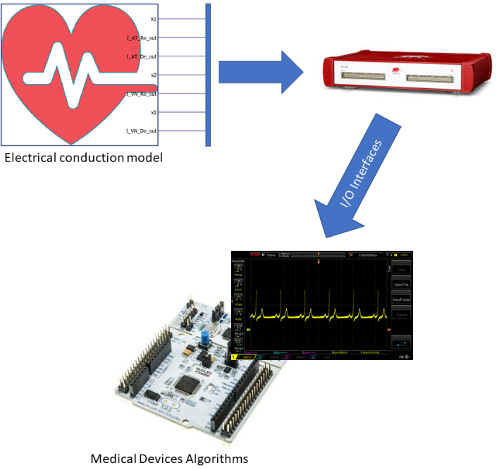
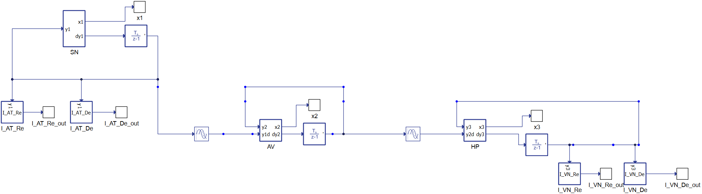
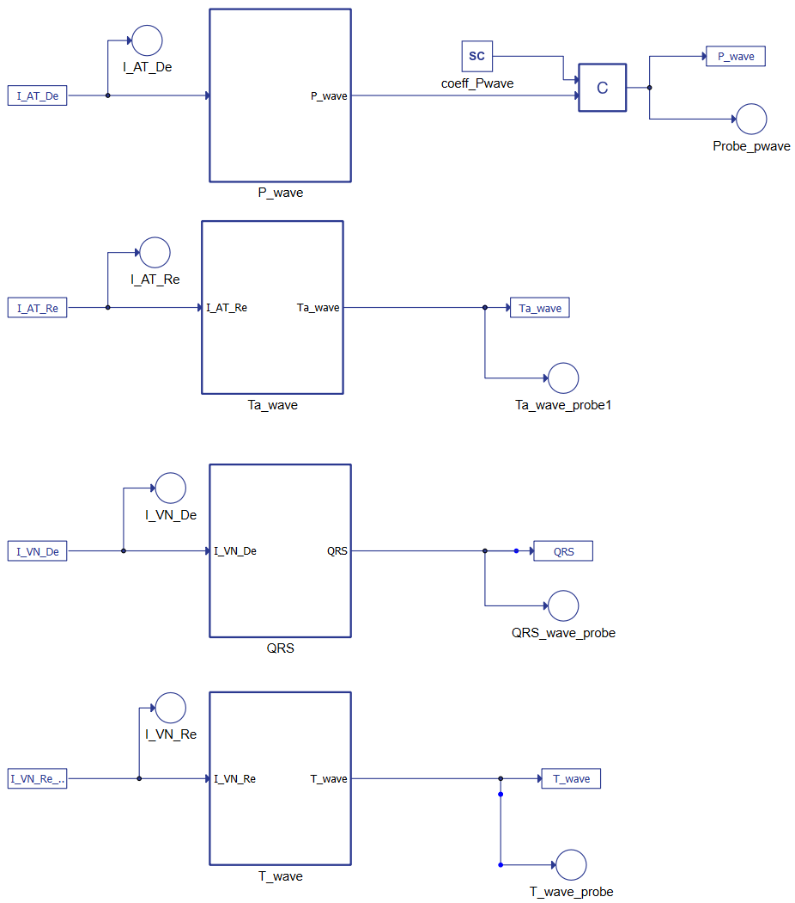
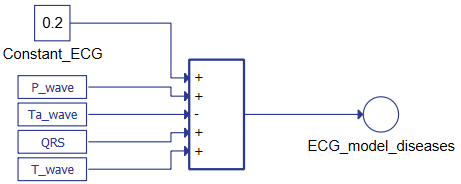
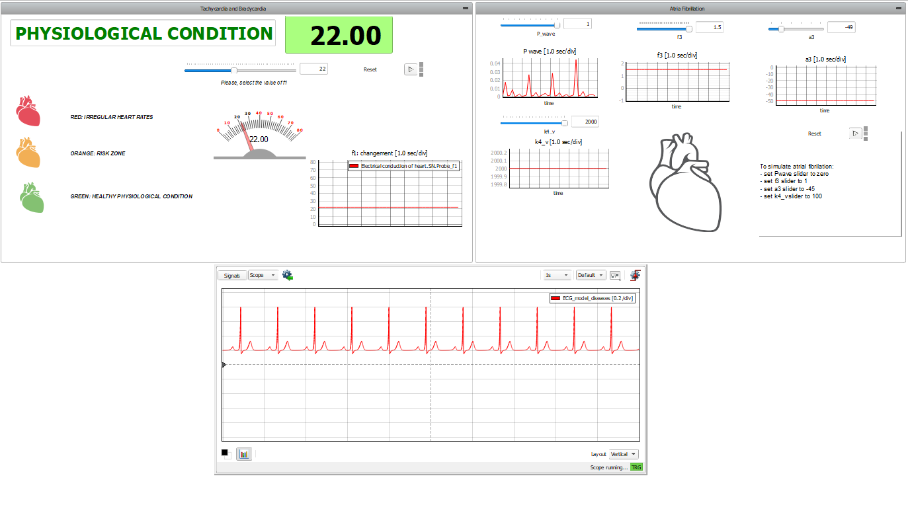
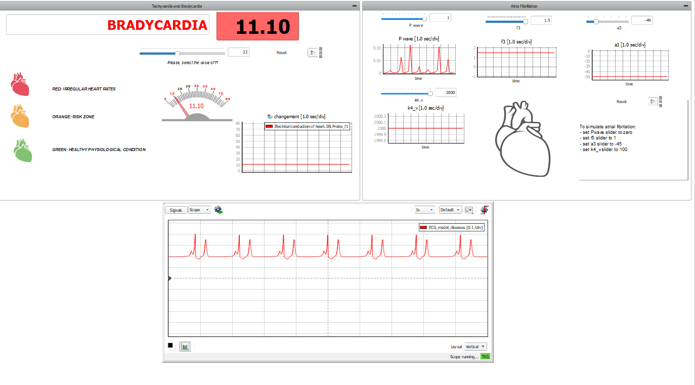
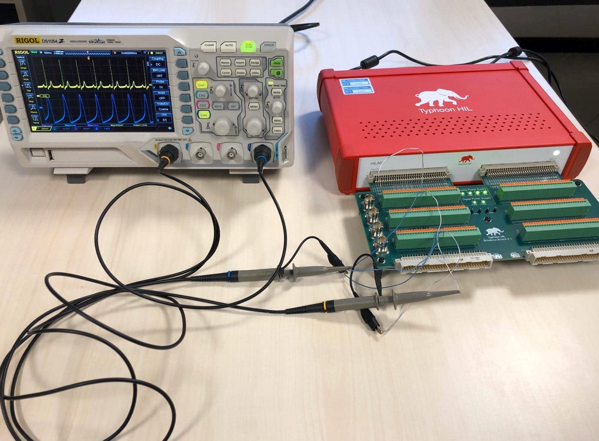

Heart model
Demonstration of a human heart model and how it can be used to HIL test biomedical device performance in a heart with different medical conditions.
Introduction
Biomedical devices must respect stringent criteria to make them safe, effective, and robust before they can be tested in the field by implanting them in a living being. In these contexts, real-time simulators combined with Hardware-in-the-loop methodologies permit us to validate and improve algorithms before the field-testing stage, greatly reducing the risk to test patients. Among the variety of devices, this application note focuses on those connected to the heart. A model of a human heart is implemented using the equations described originally in Ryzhii et al [1] and reorganized to be deployed in the HIL402 Hardware in the Loop simulator. By adjusting the parameters of the equations, it is possible to alter the output signal's characteristics, allowing simulation of different cardiac conditions, such as a heart affected by tachycardia, bradycardia, and/or atrial fibrillation.
This model's objective is to be a reference framework for the development and testing of biomedical devices that have to interact with the human heart (such as pacemakers, ECG analyzers, etc.). The result is a powerful simulator (the functional architecture is shown in Figure 1) which is easy to use and configure for several purposes, such as the one described in Di Mascio et al [2].

Model description
The heart is one of the most essential organs in the human body, and therefore is very well studied. Its behavior is the result of an intelligent combination of electrical phenomena. From the point of view of mathematical equations, it can be compared to an oscillator that by acting on the heart tissues allows blood to pump. Electrical signals stimulate the tissues starting from the sinoatrial node (SN), which is in the right atrium at the superior vena cava. When the signal propagates, a contraction occurs. The electrical impulse then reaches the atrioventricular (AV) node, which sends stimulation to the lower heart chambers (the ventricles), contracting them and pumping blood. Afterwards, the SN node sends another signal to the atria and the process begins again.
The equations describing the whole behavior are reported in [1] and [2] and describe the heart's conduction system as three natural pacemakers based on modified van der Pol's equations with a unidirectional time-delay velocity coupling.

Figure 2 reports the dynamic conduction schematic, starting from the left with the SinoAtrial (SN) node connected to the atrioventricular node (AV). The equations are delayed differential equations (DDEs) with constant delays.
The second system of equations represents the ECG's waves, as shown in Figure 3. The terms constitute the link between the two parts of the mathematical model where IATDE, IATRE IVNDE, and IVNRE represent the ionic currents. Combining the AT and VN muscles' results as reported in Figure 4 shows it is possible to reconstruct the whole ECG.

The tentative parameters of the model are defined in [1].
- Scaling coefficients: , , ,
- Parameters defining the amplitude of a pulse: , , , ;
- Parameters changing the rest state and dynamics: , , , ;
- Parameters controlling the hyperpolarization of the excitation variable: , , , ;
- Parameters representing excitability and controlling the abruptness of activation and the duration of the action potential: , , , ;
- Parameters changing the rest state and dynamics: , , , ;
- Parameters controlling excitation Threshold: , , , ;
- Parameters controlling excited state: , , , ;
- Coupling coefficient for P wave: ;
- Coupling coefficient for Ta wave: ;
- Coupling coefficient for QRS complex: ;
- Coupling coefficient for T wave:
.
Figure 4. Typhoon HIL schematic for generating the ECG signal 
Simulation
This application comes with a pre-built SCADA panel. It offers the most essential user interface elements (widgets) to monitor and interact with the simulation at runtime, allowing you to further customize it according to your needs. Figure 5 shows the SCADA used for the control of simulation and to check the results. There are three subpanels inside. On the left, the first one allows for changing the value of parameter (described in [2]). This parameter controls the SN node's pulse rate: the higher the parameter, the higher the heartbeat frequency. At simulation start, the SCADA panel will propose default physiological conditions. Changing the SCADA parameters will modify how the heart works. The colors and messages displayed say in which region the heart is working. In the lower panel, the scope shows the ECG waveform, reproducing the selected condition. The reconstructed ECGs are coherent with the main ECG features, but fine-tuning the model parameters is needed to fit the physiological data.


On the right side, the panel allows for simulation of atrial defects. Atrial fibrillation (AF) is an abnormal and irregular heart rhythm in which electrical signals are generated chaotically throughout the upper atria (chambers) of the heart. In the presence of AF, the sinoatrial node in the right atrium produces disorganized impulses, causing irregular conduction of the ventricular impulses that generate heartbeats. To do this, we act on four parameters:
- the P-wave is set to 0;
- the , which controls the amplitude of pulsation in the HP fiber, is reduced ( );
- , which is the pacemaker's damping coefficient, is also reduced ( ) to prolong the swing;
- and is set to reduce the amplitude of the T wave in the ECG.
The generated wave, including the ECG, are also reproduced as a physical signal by the HIL hardware.

Test Automation
We don’t have a test automation for this example yet. Let us know if you wish to contribute and we will gladly have you signed on the application note!
Example requirements
Table 1 provides detailed information about the file locations and hardware requirements for running the model in real-time, followed by the HIL device resource utilization when running the model using this minimal hardware configuration. This information is provided to help you with running and customizing the model as you see fit.
| Files | |
|---|---|
| Typhoon HIL files | examples\models\medical devices\heart model\ heart model.tse heart model.cus |
| Minimum hardware requirements | |
| No. of HIL devices | 1 |
| HIL device model | HIL101 |
| Device configuration | 1 |
| HIL device resource utilization | |
| No. of processing cores | 1 |
| Max. matrix memory utilization | 0.02% (core0) |
| Max. time slot utilization | 21.82% (core0) |
| Simulation step, electrical | 0.5 µs |
| Execution rate, signal processing | 100 µs |
References
[1] Ryzhii, E.; Ryzhii, M. A heterogeneous coupled oscillator model for simulation of ECG signals. Comput. Methods Programs Biomed. 2014, 117, 40–49.
[2] Di Mascio, C.; Gruosso, G. Hardware in the Loop Implementation of the Oscillator-based Heart Model: A Framework for Testing Medical Devices. Electronics, 2020, 9, 571. https://doi.org/10.3390/electronics9040571
Authors
[1] Prof. Giambattista Gruosso, giambattista.gruosso@polimi.it